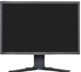

Você já usou um computador, seja para trabalho, estudos ou mesmo para se distrair
navegando na internet? Se a sua resposta é sim, te convido a conhecer um pouco
mais sobre esta ferramenta tão importante no nosso dia a dia. Mas se a sua
resposta é não, não se assuste pois esta apostila também é para você! Sente, leia
com atenção, converse com os colegas, com o professor, aposto que ao final você
também vai conhecer mais sobre essa tão importante ferramenta!
Os computadores que usamos em casa ou no trabalho se dividem em dois tipos: os
computadores de mesa, conhecidos também como desktops, e os notebooks,
também chamados de laptops.
Os desktops se subdividem em dois tipos:
Computador do tipo torre
Ele possui o gabinete separado do monitor. O gabinete é
o espaço onde estão alojados os componentes
necessários para o funcionamento do computador:
memórias, placas, processador, cabos, dentre outros .
Computador do tipo All in One (tudo em um)
A primeira vista este modelo de desktop parece um
monitor apenas, não é? Mas não se engane, ele possui o
gabinete, ou seja, memórias, placas, processador, cabos,
dentre outros componentes, todos acoplados na parte de
trás do monitor, o que torna o All in One um modelo de
desktop mais prático e fácil de acomodar.
Os notebooks
Os notebooks são computadores muito versáteis,
leves e podem ser transportados com facilidade. É
uma ótima opção para quem quer levar o
computador para escola ou mesmo para o trabalho.
Nele, o teclado, a tela (monitor) e os componentes
estão todos acoplados formando uma peça única.
Seja um desktop ou notebook, um computador é composto por duas partes
básicas: softwares, que são as partes lógicas, isto é, programas, aplicativos e
sistemas operacionais, e hardwares, que são as partes físicas e que muitas vezes
podem ser manuseadas pelos usuários. A seguir, vamos conhecer melhor essas
duas partes.
HARDWARE :
Gabinete
O gabinete é o espaço onde estão alojados os componentes
necessários para o funcionamento do computador. Memórias,
placas, processador, cabos, dentre outros componentes compõem
o gabinete. Costumamos dizer que o gabinete é o próprio
computador.
Mouse
É um dispositivo bastante simples, porém de muita importância.
Com o mouse o usuário manuseia o cursor (seta que aparece na tela
do computador) para selecionar os objetos desejados, abrir arquivos
(com duplo clique), copiar e colar textos, selecionar pastas, figuras,
imagens, etc. O mouse é composto normalmente por 2 botões: um
esquerdo e um direito e, ao meio, uma rodinha (scroll). Mas qual a
função deles?
Botão esquerdo: O botão esquerdo é usado normalmente para
selecionar, abrir arquivos, arrastar, marcar, posicionar o cursor,
entre outras funções. Isto vai depender de qual ferramenta você
está usando no computador.
Botão direito: O botão direito do mouse é usado, em geral, para
acessar propriedades da ferramenta, ver opções de ajustes,
acessar submenu com informações de edição (copiar, colar e
recortar). Portanto este botão assume várias funções
dependendo do momento e do local em que é acionado.
Rodinha (scroll): Tem a função de movimentar o cursor
rapidamente na tela, seguindo o movimento que é feito com ela.
Girá-la, por exemplo, na sua direção, fará com que o conteúdo da
tela se movimente para cima (seja em um texto ou página web).
É o periférico em que se encontram os principais comandos para operar um
computador. É pelo teclado que os textos são digitados. Ele está dividido em cinco
partes:
Ela tem a função de clique também, e isso fará com que a navegação seja feita em
câmera lenta. Faça um teste!
Teclado
É o periférico em que se encontram os principais comandos para operar um
computador. É pelo teclado que os textos são digitados. Ele está dividido em cinco
partes:
A) Teclado alfanumérico: com letras e números como em uma máquina de
escrever; B) Teclado numérico: como em uma calculadora. C) Teclas de controle: são teclas que (F1, Home, Alt e Shift, Insert, Delete, Page
Up, Page Down, por exemplo), usadas isoladamente ou em conjunto com outras,
executam funções específicas. D) Teclas de direção: essas teclas possuem setas indicando o sentido de direção
do cursor. E) Teclas de função: realizam funções específicas, que mudam de acordo com o
programa ou sistema operacional utilizado. Elas também podem ser ativadas em
conjunto com outras teclas.
Função das principais teclas no teclado
A tecla Enter é utilizada para iniciar parágrafo, quebrar uma
linha no texto ou efetuar confirmações.
A tecla Shift é utilizada para iniciar caracteres especiais ou
ativar momentaneamente as teclas maiúsculas do teclado
(mantendo a tecla Shift pressionada).
Tab é usada na edição de textos. Serve como marcador de
parágrafos. Ela é útil também quando precisamos movimentar o
cursor de um campo a outro, ou seja, para preencher cadastros,
entrar no e-mail, etc.
Chamada de Backspace, essa tecla serve para retroceder o
cursor, apagando os caracteres à esquerda do cursor.
A tecla Caps Lock ativa/desativa as letras maiúsculas do
teclado.
A Print Screen é utilizada para capturar imagens que são
exibidas na tela do computador.
A tecla Control tem utilidade principalmente quando usada em
conjunto com outras teclas, nos chamados “atalhos do
teclado.
A Alt é uma tecla de controle alternativo. Libera o uso do menu
para trabalhar com o teclado e também pode ser combinada
com outras teclas para executar funções.
A tecla Esc ou escape é usada para abandonar uma tela,
programa ou menu.
A Delete ou Del apaga um caractere à direita do cursor. No
Windows, deleta arquivos ou pastas.

Monitor
O monitor é outro periférico bastante importante, pois é
através dele que vemos as imagens que são projetadas
pelo computador. Atualmente, muitas TVs vêm com função
de monitor, portanto, possuem saídas específicas para
ligar à CPU e assim projetar a imagem.
Como as TVs, quanto melhor a resolução do monitor, melhor será a visualização da
imagem projetada.
Webcam
Anteriormente considerada apenas um acessório para os
computadores, a webcam se tornou essencial para as
gravações de videoaulas e participação nas aulas on-line.
Com uma webcam, utilizando aplicativos de
webconferência como Google Meet e Microsoft Teams, por
exemplo, você pode aparecer em vídeo durante a aula online.
Como periférico, a webcam pode estar vinculada ao computador ou notebook de 2
formas:
Acoplada ao computador, como normalmente já
vem nos notebooks e desktops do tipo All in one.
Individual, conectada ao computador por meio de
um cabo do tipo USB.
Kit Multimídia
Assim como a webcam, o kit multimídia é um periférico do
computador que se tornou bastante utilizado pelos usuários nos
últimos anos. Com função de recepção e transmissão de voz e
áudio, os kits têm se tornado cada vez menores, porém mais
robustos quanto à qualidade de captação.